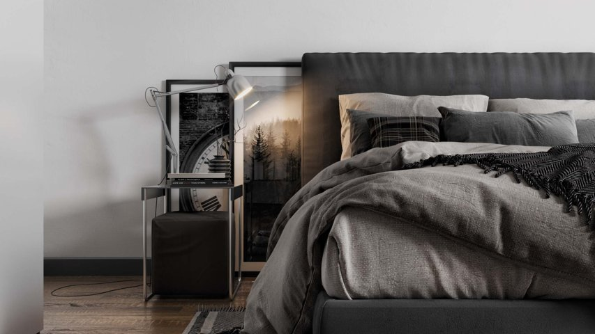

Преимущества 3D визуализации дизайн-проекта
Основным рабочим инструментов модельеров является специальное ПО, посредством которого отображаются детали разрабатываемого объекта. Клиент сможет увидеть визуализацию дизайн-проекта: Дизайн 3d визуализацияотдельной комнаты – с чётко прорисованными элементами интерьера, обстановки, цветового оформления мебели, текстиля, подбором декора; внутреннего пространства постройки – заказчик может увидеть, как смотрится отделка помещений, расположение дверных и оконных проёмов, лестниц; фасада здания – на реальной картинке хорошо видно размещение объекта на территории, соответствие наружного оформления стен задуманному стилю; разрабатываемого ландшафта – согласовывается размещения всех построек на участке, оформляется зонирование территории, корректируется декоративное оформление. Клиент получает возможность с помощью визуализации дизайн-проекта увидеть будущий дом, отремонтированную квартиру или переоборудованный сад с разных ракурсов. Реалистичные фотографии или созданное виртуальной программой видео охватывает все участки объекта с точной передачей цветовой гаммы, стиля освещения, подобранного декора. Этап 3d визуализации дизайн-проекта позволяет сделать необходимые корректировки в расчётах, поменять стильное направление интерьера или поэкспериментировать с расцветкой текстиля. Теперь заказчик чётко понимает, каким будет его новое жильё, приусадебная территория, офис или целый деловой центр.

Типы 3-х мерного представления
Создать 3-х мерную картинку разрабатываемого объекта можно несколькими способами. Стоимость такой услуги зависит от сложности самого проекта, выполняемых работ и качества используемого ПО. К первым видам объёмного проектирования относят схематическое изображение на листе бумаги. Таким способом пользуются дизайнеры при первом общении с клиентом, когда проводится начальное обсуждение всего проекта. Практичным и распространённым способом визуализации дизайн-проекта стало использование 3d графических программ. Опытные модельеры быстро выполняют даже сложные задания с точным перенесением размеров и положений всех объектов. Для такой работы (рендеринга) обычно выбирается один или несколько ракурсов. В панорамном исполнении применяется эффект камеры с поворотом в 360°. На мониторе отображается камера, поворачивая которую можно «заглянуть за угол».
Работа с внутренним пространством
С помощью визуализации дизайн-проекта модельер передаст все нюансы, задуманные дизайнером. На готовом изображении чётко видна даже фактура текстиля, использованного для оформления оконных проёмов или обивки мягкой мебели. С возможностями визуализации дизайн-проекта доступна передача цветов всех элементов интерьера в дневном и искусственном освещении. Заказчик сможет увидеть блики на мебели от солнечных лучей или отражение лампы на зеркальных/стеклянных поверхностях. При создании компьютерной графики используются конкретные параметры, взятые из ТЗ и бумажных чертежей. Поэтому чётко соблюдается соотношение всех размеров и расположение элементов интерьера.